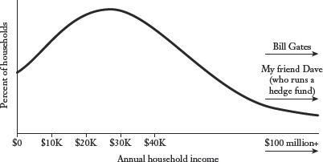
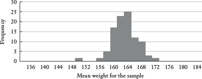
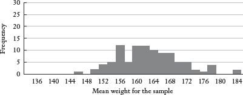
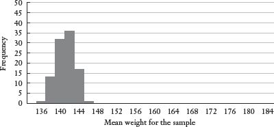
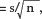
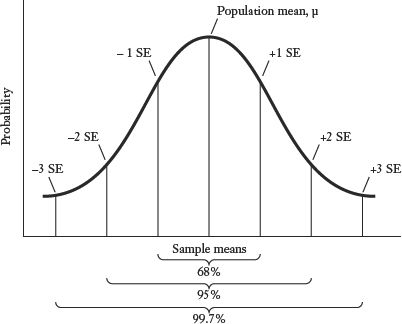
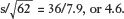
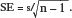

The Lebron James of statistics
At times, statistics seems almost like magic. We are able to draw sweeping and powerful conclusions from relatively little data. Somehow we can gain meaningful insight into a presidential election by calling a mere one thousand American voters. We can test a hundred chicken breasts for salmonella at a poultry processing plant and conclude from that sample alone that the entire plant is safe or unsafe. Where does this extraordinary power to generalize come from?
Much of it comes from the central limit theorem, which is the Lebron James of statistics—if Lebron were also a supermodel, a Harvard professor, and the winner of the Nobel Peace Prize. The central limit theorem is the “power source” for many of the statistical activities that involve using a sample to make inferences about a large population (like a poll, or a test for salmonella). These kinds of inferences may seem mystical; in fact, they are just a combination of two tools that we’ve already explored: probability and proper sampling. Before plunging into the mechanics of the central limit theorem (which aren’t all that tricky), here is an example to give you the general intuition.
Suppose you live in a city that is hosting a marathon. Runners from all over the world will be competing, which means that many of them do not speak English. The logistics of the race require that runners check in on the morning of the race, after which they are randomly assigned to buses to take them to the starting line. Unfortunately one of the buses gets lost on the way to the race. (Okay, you’re going to have to assume that no one has a cell phone and that the driver does not have a GPS navigation device; unless you want to do a lot of unpleasant math right now, just go with it.) As a civic leader in this city, you join the search team.
As luck would have it, you stumble upon a broken-down bus near your home with a large group of unhappy international passengers, none of whom speaks English. This must be the missing bus! You’re going to be a hero! Except you have one lingering doubt . . . the passengers on this bus are, well, very large. Based on a quick glance, you reckon that the average weight for this group of passengers has got to be over 220 pounds. There is no way that a random group of marathon runners could all be this heavy. You radio your message to search headquarters: “I think it’s the wrong bus. Keep looking.”
Further analysis confirms your initial impression. When a translator arrives, you discover that this disabled bus was headed to the International Festival of Sausage, which is also being hosted by your city on the same weekend. (For the sake of verisimilitude, it is entirely possible that sausage festival participants might also be wearing sweat pants.)
Congratulations. If you can grasp how someone who takes a quick look at the weights of passengers on a bus can infer that they are probably not on their way to the starting line of a marathon, then you now understand the basic idea of the central limit theorem. The rest is just fleshing out the details. And if you understand the central limit theorem, most forms of statistical inference will seem relatively intuitive.
The core principle underlying the central limit theorem is that a large, properly drawn sample will resemble the population from which it is drawn. Obviously there will be variation from sample to sample (e.g., each bus headed to the start of the marathon will have a slightly different mix of passengers), but the probability that any sample will deviate massively from the underlying population is very low. This logic is what enabled your snap judgment when you boarded the broken-down bus and saw the average girth of the passengers on board. Lots of big people run marathons; there are likely to be hundreds of people who weigh over 200 pounds in any given race. But the majority of marathon runners are relatively thin. Thus, the likelihood that so many of the largest runners were randomly assigned to the same bus is very, very low. You could conclude with a reasonable degree of confidence that this was not the missing marathon bus. Yes, you could have been wrong, but probability tells us that most of the time you would have been right.
That’s the basic intuition behind the central limit theorem. When we add some statistical bells and whistles, we can quantify the likelihood that you will be right or wrong. For example, we might calculate that in a marathon field of 10,000 runners with a mean weight of 155 pounds, there is less than a 1 in 100 chance that a random sample of 60 of those runners (our lost bus) would have a mean weight of 220 pounds or more. For now, let’s stick with the intuition; there will be plenty of time for calculations later. The central limit theorem enables us to make the following inferences, all of which will be explored in greater depth in the next chapter.
1. If we have detailed information about some population, then we can make powerful inferences about any properly drawn sample from that population. For example, assume that a school principal has detailed information on the standardized test scores for all the students in his school (mean, standard deviation, etc.). That is the relevant population. Now assume that a bureaucrat from the school district will be arriving next week to give a similar standardized test to 100 randomly selected students. The performance of those 100 students, the sample, will be used to evaluate the performance of the school overall.
How much confidence can the principal have that the performance of those randomly chosen 100 students will accurately reflect how the entire student body has been performing on similar standardized tests? Quite a bit. According to the central limit theorem, the average test score for the random sample of 100 students will not typically deviate sharply from the average test score for the whole school.
2. If we have detailed information about a properly drawn sample (mean and standard deviation), we can make strikingly accurate inferences about the population from which that sample was drawn. This is essentially working in the opposite direction from the example above, putting ourselves in the shoes of the school district bureaucrat who is evaluating various schools in the district. Unlike the school principal, this bureaucrat does not have (or does not trust) the standardized test score data that the principal has for all the students in a particular school, which is the relevant population. Instead, he will be administering a similar test of his own to a random sample of 100 students in each school.
Can this administrator be reasonably certain that the overall performance of any given school can be evaluated fairly based on the test scores of a sample of just 100 students from that school? Yes. The central limit theorem tells us that a large sample will not typically deviate sharply from its underlying population—which means that the sample results (scores for the 100 randomly chosen students) are a good proxy for the results of the population overall (the student body at a particular school). Of course, this is how polling works. A methodologically sound poll of 1,200 Americans can tell us a great deal about how the entire country is thinking.
Think about it: if no. 1 above is true, no. 2 must also be true—and vice versa. If a sample usually looks like the population from which it’s drawn, it must also be true that a population will usually look like a sample drawn from that population. (If children typically look like their parents, parents must also typically look like their children.)
3. If we have data describing a particular sample, and data on a particular population, we can infer whether or not that sample is consistent with a sample that is likely to be drawn from that population. This is the missing-bus example described at the beginning of the chapter. We know the mean weight (more or less) for the participants in the marathon. And we know the mean weight (more or less) for the passengers on the broken-down bus. The central limit theorem enables us to calculate the probability that a particular sample (the rotund people on the bus) was drawn from a given population (the marathon field). If that probability is low, then we can conclude with a high degree of confidence that the sample was not drawn from the population in question (e.g., the people on this bus really don’t look like a group of marathon runners headed to the starting line).
4. Last, if we know the underlying characteristics of two samples, we can infer whether or not both samples were likely drawn from the same population. Let us return to our (increasingly absurd) bus example. We now know that a marathon is going on in the city, as well as the International Festival of Sausage. Assume that both groups have thousands of participants, and that both groups are operating buses, all loaded with random samples of either marathon runners or sausage enthusiasts. Further assume that two buses collide. (I already conceded that the example is absurd, so just read on.) In your capacity as a civic leader, you arrive on the scene and are tasked with determining whether or not both buses were headed to the same event (sausage festival or marathon). Miraculously, no one on either bus speaks English, but paramedics provide you with detailed information on the weights of all the passengers on each bus.
From that alone, you can infer whether the two buses were likely headed to the same event, or to different events. Again, think about this intuitively. Suppose that the average weight of the passengers on one bus is 157 pounds, with a standard deviation of 11 pounds (meaning that a high proportion of the passengers weigh between 146 pounds and 168 pounds). Now suppose that the passengers on the second bus have a mean weight of 211 pounds with a standard deviation of 21 pounds (meaning that a high proportion of the passengers weigh between 190 pounds and 232 pounds). Forget statistical formulas for a moment, and just use logic: Does it seem likely that the passengers on those two buses were randomly drawn from the same population?
No. It seems far more likely that one bus is full of marathon runners and the other bus is full of sausage enthusiasts. In addition to the difference in average weight between the two buses, you can also see that the variation in weights between the two buses is very large compared with the variation in weights within each bus. The folks who weigh one standard deviation above the mean on the “skinny” bus are 168 pounds, which is less than the folks who are one standard deviation below the mean on the “other” bus (190 pounds). This is a telltale sign (both statistically and logically) that the two samples likely came from different populations.
If all of this makes intuitive sense, then you are 93.2 percent of the way to understanding the central limit theorem.* We need to go one step further to put some technical heft behind the intuition. Obviously when you stuck your head inside the broken-down bus and saw a group of large people in sweatpants, you had a “hunch” that they weren’t marathoners. The central limit theorem allows us to go beyond that hunch and assign a degree of confidence to your conclusion.
For example, some basic calculations will enable me to conclude that 99 times out of 100 the mean weight of any randomly selected bus of marathoners will be within nine pounds of the mean weight of the entire marathon field. That’s what gives statistical heft to my hunch when I stumble across the broken-down bus. These passengers have a mean weight that is twenty-one pounds higher than the mean weight for the marathon field, something that should only occur by chance less than 1 time in 100. As a result, I can reject the hypothesis that this is a missing marathon bus with 99 percent confidence—meaning I should expect my inference to be correct 99 times out of 100.
And yes, probability suggests that on average I’ll be wrong 1 time in 100.
This kind of analysis all stems from the central limit theorem, which, from a statistical standpoint, has Lebron James–like power and elegance. According to the central limit theorem, the sample means for any population will be distributed roughly as a normal distribution around the population mean. Hang on for a moment as we unpack that statement.
1. Suppose we have a population, like our marathon field, and we are interested in the weights of its members. Any sample of runners, such as each bus of sixty runners, will have a mean.
2. If we take repeated samples, such as picking random groups of sixty runners from the field over and over, then each of those samples will have its own mean weight. These are the sample means.
3. Most of the sample means will be very close to the population mean. Some will be a little higher. Some will be a little lower. Just as a matter of chance, a very few will be significantly higher than the population mean, and a very few will be significantly lower.
Cue the music, because this is where everything comes together in a powerful crescendo . . .
4. The central limit theorem tells us that the sample means will be distributed roughly as a normal distribution around the population mean. The normal distribution, as you may remember from Chapter 2, is the bell-shaped distribution (e.g., adult men’s heights) in which 68 percent of the observations lie within one standard deviation of the mean, 95 percent lie within two standard deviations, and so on.
5. All of this will be true no matter what the distribution of the underlying population looks like. The population from which the samples are being drawn does not have to have a normal distribution in order for the sample means to be distributed normally.
Let’s think about some real data, say, the household income distribution in the United States. Household income is not distributed normally in America; instead, it tends to be skewed to the right. No household can earn less than $0 in a given year, so that must be the lower bound for the distribution. Meanwhile, a small group of households can earn staggeringly large annual incomes—hundreds of millions or even billions of dollars in some cases. As a result, we would expect the distribution of household incomes to have a long right tail—something like this:

The median household income in the United States is roughly $51,900; the mean household income is $70,900.1 (People like Bill Gates pull the mean household income to the right, just as he did when he walked in to the bar in Chapter 2.) Now suppose we take a random sample of 1,000 U.S. households and gather information on annual household income. On the basis of the information above, and the central limit theorem, what can we infer about this sample?
Quite a lot, it turns out. First of all, our best guess for what the mean of any sample will be is the mean of the population from which it’s drawn. The whole point of a representative sample is that it looks like the underlying population. A properly drawn sample will, on average, look like America. There will be hedge fund managers and homeless people and police officers and everyone else—all roughly in proportion to their frequency in the population. Therefore, we would expect the mean household income for a representative sample of 1,000 American households to be about $70,900. Will it be exactly that? No. But it shouldn’t be wildly different either.
If we took multiple samples of 1,000 households, we would expect the different sample means to cluster around the population mean, $70,900. We would expect some means to be higher, and some to be lower. Might we get a sample of 1,000 households with a mean household income of $427,000? Sure, that’s possible—but highly unlikely. (Remember, our sampling methodology is sound; we are not conducting a survey in the parking lot of the Greenwich Country Club.) It’s also highly unlikely that a proper sample of 1,000 American households would have a mean income of $8,000.
That’s all just basic logic. The central limit theorem enables us to go one step further by describing the expected distribution of those different sample means as they cluster around the population mean. Specifically, the sample means will form a normal distribution around the population mean, which in this case is $70,900. Remember, the shape of the underlying population doesn’t matter. The household income distribution in the United States is plenty skewed, but the distribution of the sample means will not be skewed. If we were to take 100 different samples, each with 1,000 households, and plotted the frequency of our results, we would expect those sample means to form the familiar “bell-shaped” distribution around $70,900.
The larger the number of samples, the more closely the distribution will approximate the normal distribution. And the larger the size of each sample, the tighter that distribution will be. To test this result, let’s do a fun experiment with real data on the weights of real Americans. The University of Michigan conducts a longitudinal study called Americans’ Changing Lives, which consists of detailed observations on several thousand American adults, including their weights. The weight distribution is skewed slightly right, because it’s biologically easier to be 100 pounds overweight than it is to be 100 pounds underweight. The mean weight for all adults in the study is 162 pounds.
Using basic statistical software, we can direct the computer to take a random sample of 100 individuals from the Changing Lives data. In fact, we can do this over and over again to see how the results fit with what the central limit theorem would predict. Here is a graph of the distribution of 100 sample means (rounded to the nearest pound) randomly generated from the Changing Lives data.
100 Sample Means, n = 100

The larger the sample size and the more samples taken, the more closely the distribution of sample means will approximate the normal curve. (As a rule of thumb, the sample size must be at least 30 for the central limit theorem to hold true.) This makes sense. A larger sample is less likely to be affected by random variation. A sample of 2 can be highly skewed by 1 particularly large or small person. In contrast, a sample of 500 will not be unduly affected by a few particularly large or small people.
We are now very close to making all of our statistical dreams come true! The sample means are distributed roughly as a normal curve, as described above. The power of a normal distribution derives from the fact that we know roughly what proportion of observations will lie within one standard deviation above or below the mean (68 percent); what proportion of observations will lie within two standard deviations above or below the mean (95 percent); and so on. This is powerful stuff.
Earlier in this chapter, I pointed out that we could infer intuitively that a busload of passengers with a mean weight twenty-five pounds higher than the mean weight for the whole marathon field was probably not the lost bus of runners. To quantify that intuition—to be able to say that this inference will be correct 95 percent of the time, or 99 percent, or 99.9 percent—we need just one more technical concept: the standard error.
The standard error measures the dispersion of the sample means. How tightly do we expect the sample means to cluster around the population mean? There is some potential confusion here, as we have now introduced two different measures of dispersion: the standard deviation and the standard error. Here is what you need to remember to keep them straight:
1. The standard deviation measures dispersion in the underlying population. In this case, it might measure the dispersion of the weights of all the participants in the Framingham Heart Study, or the dispersion around the mean for the entire marathon field.
2. The standard error measures the dispersion of the sample means. If we draw repeated samples of 100 participants from the Framingham Heart Study, what will the dispersion of those sample means look like?
3. Here is what ties the two concepts together: The standard error is the standard deviation of the sample means! Isn’t that kind of cool?
A large standard error means that the sample means are spread out widely around the population mean; a small standard error means that they are clustered relatively tightly. Here are three real examples from the Changing Lives data.
100 Sample Means, n = 20

100 Sample Means, n = 100
Female Population Only/100 Sample Means, n = 100

The second distribution, which has a larger sample size, is more tightly clustered around the mean than the first distribution. The larger sample size makes it less likely that a sample mean will deviate sharply from the population mean. The final set of sample means is drawn only from a subset of the population, women in the study. Since the weights of women in the data set are less diffuse than the weights of all persons in the population, it stands to reason that the weights of samples drawn just from the women would be less dispersed than samples drawn from the whole Changing Lives population. (These samples are also clustered around a slightly different population mean, since the mean weight for all females in the Changing Lives study is different from the mean weight for the entire population in the study.)
The pattern that you saw above holds true in general. Sample means will cluster more tightly around the population mean as the size of each sample gets larger (e.g., our sample means were more tightly clustered when we took samples of 100 rather than 30). And the sample means will cluster less tightly around the population mean when the underlying population is more spread out (e.g., our sample means for the entire Changing Lives population were more dispersed than the sample means for just the females in the study).
If you’ve followed the logic this far, then the formula for the standard error follows naturally:
SE  where s is the standard deviation of the population from which the sample is drawn, and n is the size of the sample. Keep your head about you! Don’t let the appearance of letters mess up the basic intuition. The standard error will be large when the standard deviation of the underlying distribution is large. A large sample drawn from a highly dispersed population is also likely to be highly dispersed; a large sample from a population clustered tightly around the mean is also likely to be clustered tightly around the mean. If we are still looking at weight, we would expect the standard error for a sample drawn from the entire Changing Lives population to be larger than the standard error for a sample drawn only from the men in their twenties. This is why the standard deviation (s) is in the numerator.
Similarly, we would expect the standard error to get smaller as the sample size gets larger, since large samples are less prone to distortion by extreme outliers. This is why the sample size (n) is in the denominator. (The reason we take the square root of n will be left for a more advanced text; the basic relationship is what’s important here.)
In the case of the Changing Lives data, we actually know the standard deviation of the population; often that is not the case. For large samples, we can assume that the standard deviation of the sample is reasonably close to the standard deviation of the population.*
Finally, we have arrived at the payoff for all of this. Because the sample means are distributed normally (thanks to the central limit theorem), we can harness the power of the normal curve. We expect that roughly 68 percent of all sample means will lie within one standard error of the population mean; 95 percent of the sample means will lie within two standard errors of the population mean; and 99.7 percent of the sample means will lie within three standard errors of the population mean.
Frequency Distribution of Sample Means

So let’s return to a variation on our lost-bus example, only now we can substitute numbers for intuition. (The example itself will remain absurd; the next chapter will have plenty of less absurd, real-world examples.) Suppose that the Changing Lives study has invited all of the individuals in the study to meet in Boston for a weekend of data gathering and revelry. The participants are loaded randomly onto buses and ferried among the buildings at the testing facility where they are weighed, measured, poked, prodded, and so on. Shockingly, one bus goes missing, a fact that is broadcast on the local news. At around that time, you are driving back from the Festival of Sausage when you see a crashed bus on the side of the road. Apparently the bus swerved to miss a wild fox crossing the road, and all of the passengers are unconscious but not seriously hurt. (I need them to be uncommunicative for the example to work, but I don’t want their injuries to be too disturbing.) Paramedics on the scene inform you that the mean weight of the 62 passengers on the bus is 194 pounds. Also, the fox that the bus swerved to avoid was clipped slightly and appears to have a broken hind leg.
Fortunately you know the mean weight and standard deviation for the entire Changing Lives population, you have a working knowledge of the central limit theorem, and you know how to administer first aid to a wild fox. The mean weight for the Changing Lives participants is 162; the standard deviation is 36. From that information, we can calculate the standard error for a 62-person sample (the number of unconscious passengers on the bus): 
The difference between the sample mean (194 pounds) and the population mean (162 pounds) is 32 pounds, or well more than three standard errors. We know from the central limit theorem that 99.7 percent of all sample means will lie within three standard errors of the population mean. That makes it extremely unlikely that this bus represents a random group of Changing Lives participants. In your duty as a civic leader, you call the study officials to tell them that this is probably not their missing bus, only now you can offer statistical evidence, rather than just “a hunch.” You report to the Changing Lives folks that you can reject the possibility that this is the missing bus at the 99.7 percent confidence level. And since you are talking to researchers, they actually understand what you are talking about.
Your analysis is further confirmed when paramedics conduct blood tests on the bus passengers and discover that the mean cholesterol level for the busload of passengers is five standard errors above the mean cholesterol level for the Changing Lives study participants. That suggests, correctly it later turns out, that the unconscious passengers are involved with the Festival of Sausage.
[There is a happy ending. When the bus passengers regained consciousness, Changing Lives study officials offered them counseling on the dangers of a diet high in saturated fats, causing many of them to adopt more heart-healthy eating habits. Meanwhile, the fox was nurtured back to health at a local wildlife preserve and was eventually released back into the wild.]*
I’ve tried to stick with the basics in this chapter. You should note that for the central limit theorem to apply, the sample sizes need to be relatively large (over 30 as a rule of thumb). We also need a relatively large sample if we are going to assume that the standard deviation of the sample is roughly the same as the standard deviation of the population from which it is drawn. There are plenty of statistical fixes that can be applied when these conditions are not met—but that is all frosting on the cake (and maybe even sprinkles on the frosting on the cake). The “big picture” here is simple and massively powerful:
1. If you draw large, random samples from any population, the means of those samples will be distributed normally around the population mean (regardless of what the distribution of the underlying population looks like).
2. Most sample means will lie reasonably close to the population mean; the standard error is what defines “reasonably close.”
3. The central limit theorem tells us the probability that a sample mean will lie within a certain distance of the population mean. It is relatively unlikely that a sample mean will lie more than two standard errors from the population mean, and extremely unlikely that it will lie three or more standard errors from the population mean.
4. The less likely it is that an outcome has been observed by chance, the more confident we can be in surmising that some other factor is in play.
That’s pretty much what statistical inference is about. The central limit theorem is what makes most of it possible. And until Lebron James wins as many NBA championships as Michael Jordan (six), the central limit theorem will be far more impressive than he is.
* Note the clever use of false precision here.
* When the standard deviation for the population is calculated from a smaller sample, the formula is tweaked slightly:  This helps to account for the fact that the dispersion in a small sample may understate the dispersion of the full population. This is not highly relevant to the bigger points in this chapter.
* My University of Chicago colleague Jim Sallee makes a very important critique of the missing-bus examples. He points out that very few buses ever go missing. So if we happen to be looking for a missing bus, any bus that turns up lost or crashed is likely to be that bus, regardless of the weight of the passengers on the bus. He’s right. (Think about it: if you lose your child in a supermarket, and the store manager tells you that there happens to be a lost child standing near register six, you would conclude immediately that it’s probably your child.) We’re therefore going to have to add one more element of absurdity to these examples and pretend that buses go missing all the time.